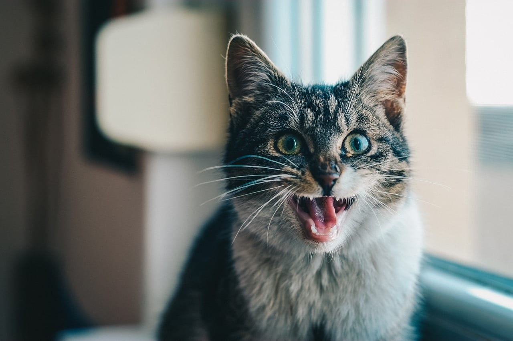
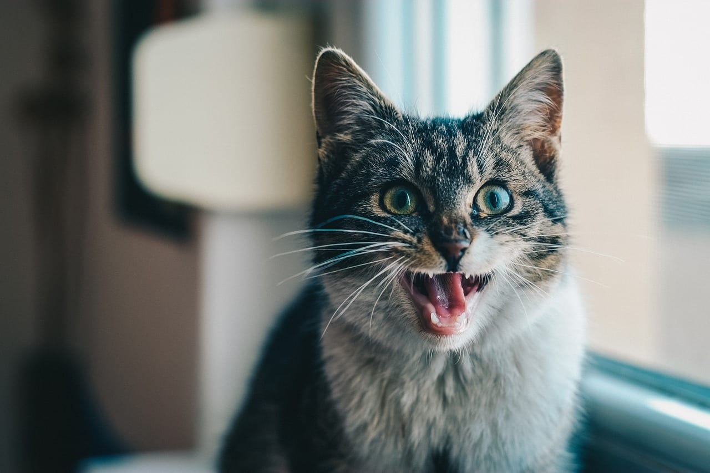
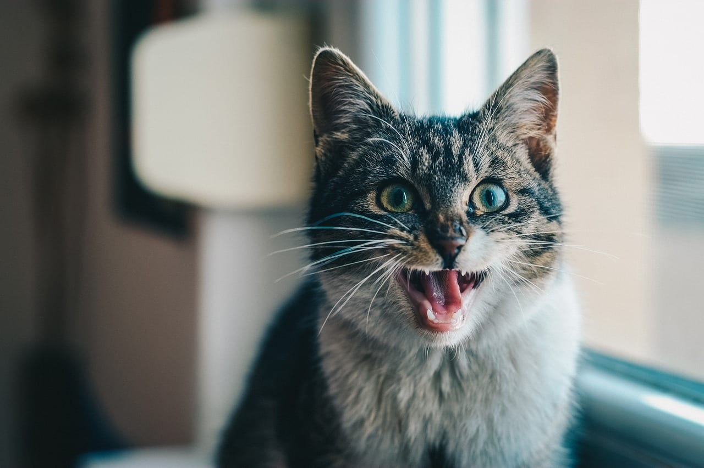

====this is a website====
Hector Rionda
Main Menu
Home
Page 1
Page 2
Page 3
Page 4
MEOW

Here is a
fun
fact:
Cats do not usually meow to talk to eachother, but to communicate to humans.
Kittens stop meowing for their mother after 4-5 months.
 
